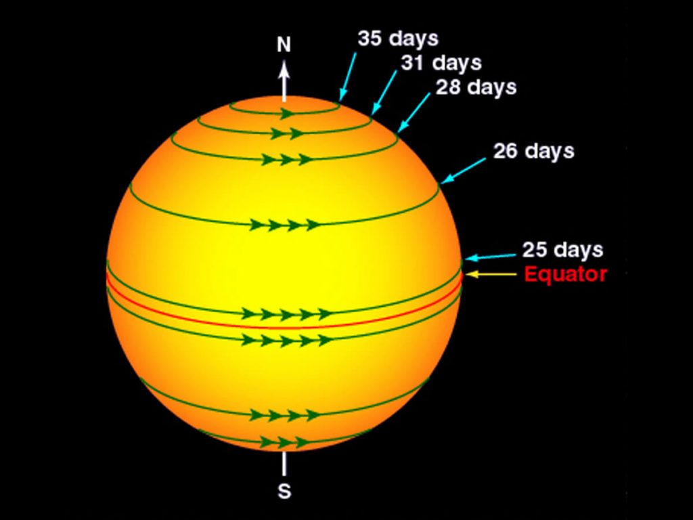

သိပ္ပံ ပညာရှင် တွေရဲ့ သုတေသန ပြုချက် တွေအရ ကျွန်တော်တို့ရဲ့ နေ ကလဲ သူ့ရဲ့ ဝင်ရိုးပေါ်မှာ ဗဟိုပြုပြီး လည်နေပါတယ်။ ဒါပေမယ့် သူ့ရဲ့ လည်ပတ်နှုန်း ကတော့ အခြား ဂြိုဟ် တွေရဲ့ လည်ပတ်နှုန်းနဲ့ ယှဉ်လိုက်လျှင် အတော်လေး နှေးတယ်လို့ ဆိုရမှာ ဖြစ်ပါတယ်။
နေက ကမ္ဘာနဲ့ အတွင်းပိုင်း ဂြိုဟ်တွေလို ကျောက်သား အစိုင်အခဲ နဲ့ တည်ဆောက်ထားတာ မဟုတ်ပါဘူး။ အလွန် တရာမှ ပူပြင်းတဲ့ ဓါတ်ငွေ့လုံးကြီး ဖြစ်ပါတယ်။ ဒီလို ဓါတ်ငွေ့တွေနဲ့ တည်ဆောက်ထားတာမို့ နေရဲ့ လည်ပတ်မှုကို တိုင်းတာဖို့က မလွယ်ကူ လှပါဘူး။
အမေရိကန် ပြည်ထောင်စု နာဆာ အဖွဲ့ကြီးရဲ့ အဆိုအရဆို နေဟာ ဓါတ်ငွေ့တွေနဲ့ ဖွဲ့စည်း ထားတာမို့ သူ့ရဲ့ လည်ပတ်မှုကလဲ ကမ္ဘာလိုမျိုး ကျစ်ကျစ် လစ်လစ် မရှိလှပါဘူးတဲ့၊ ဆိုလိုတာက သူ့ရဲ့ လည်ပတ်နှုန်း က တသမတ်ထဲ မဟုတ်ပဲ အီကွေတာကနေ အကွာအဝေး အလိုက် လည်ပတ်နှုန်း ကွာပါတယ်။
အောက်က ပုံမှာ ကြည့်ရင် နေရဲ့ လည်ပတ်နှုန်းက အီကွေတာ ကနေ အကွာအဝေး အလိုက် ကွာသွားတာကို တွေ့ရမှာ ဖြစ်ပါတယ်။ အကြမ်းဖျင်း ပြောရရင်တော့ နေဟာ သူ့ဝင်ရိုးပေါ်မှာ ပျမ်းမျှ ၂၇ ရက်ကို တစ်ကြိမ် လည်ပတ်ပါတယ်။
ဒါပေမယ့် အီကွေတာနဲ့ နီးတဲ့ အရပ်မှာ လည်ပတ်နှုန်းက ပိုမြန်ပြီး တစ်ပတ်ကို ၂၄ ရက်ပဲ ကြာပါတယ်။ တောင် နဲ့ မြောက် ဝင်ရိုးစွန်း တွေမှာတော့ လည်ပတ်နှုန်းက ပိုနှေးတဲ့ အတွက် တစ်ပတ်လည်ဖို့ အချိန် ၃၅ ရက်လောက် ကြာပါတယ်။

နေ က သူ့ဝင်ရိုး ပေါ်မှာ လည်နေတယ် ဆိုတာကို ပထမဆုံး စပြီး သတိပြုမိ တာကတော့ ဂယ်လီလီယို (Galileo Galilei) ပဲ ဖြစ်ပါတယ်။ ၁၆၁၂ ခုနှစ်မှာ သူဟာ နေကို စူးစမ်း လေ့လာရင်း ထူးခြားချက် တစ်ရပ်ကို သတိပြုမိ ခဲ့ပါတယ်။ နေပေါ်မှာ ရံဖန် ရံခါ ပေါ်ပေါက်လာ တတ်တဲ့ အမဲစက် လေးတွေ (Sunspots) တွေဟာ အငြိမ် မနေပဲ နေရဲ့ မျက်နှာပြင်မှာ ရွေ့နေတယ် ဆိုတာကို သတိပြုမိ ခဲ့တာပါ။ ဒီအချိန်က စလို့ သိပ္ပံ ပညာရှင် တွေဟာ နေဟာလဲ ကမ္ဘာလိုပဲ သူ့ဝင်ရိုးပေါ်မှာ လည်နေတယ် ဆိုတာ သိရှိလာခဲ့တာ ဖြစ်ပါတယ်။
ယခုထိ တိုင်အောင် နေရဲ့ လည်ပတ်နှုန်းကို ဒီ Sunspots တွေရဲ့ ရွှေ့လျှားမှု နှုန်းကို ကြည့်ပြီး တွက်ချက်နိုင်ပါ သေးတယ်။
ဒီ နေပေါ်က အစက်အပြောက် တွေကရော ဘယ်လို ပေါ်လာတာ ပါလဲ။ ဒီ Sunspots တွေဟာ နေရဲ့ သံလိုက်လှိုင်း တွေက သူ့ရဲ့ ပလပ်စမာ ဖြစ်နေတဲ့ ဓါတ်ငွေ့တွေနဲ့ ဓါတ်ပြုပြီး ဖြစ်လာတာ ဖြစ်ပါတယ်။ ဒီ အစက်အပြောက် တွေဟာ နေပေါ်မှာတော့ အလွန် ကြီးမားတဲ့ နေမီးလျှံ ကြီးတွေ နေမုန်တိုင်းတွေကို အစပြု ပေးနိုင်ပါတယ်။
ဒီ Sunspots တွေဟာ နေပေါ်မှာ ရှိနေတော့ အလွန် ပူပြင်း မယ်လို့ ထင်စရာ ရှိပါတယ်။ ဒါပေမယ့် တကယ်ကျတော့ ဒီ Sunspots တွေဟာ နေပေါ်မှာ ဆိုရင် အေးတယ် လို့ ပြောရမှာ ဖြစ်ပါတယ်။ (ဒီနေရာမှာ အေးတယ် ဆိုတာက နေရဲ့ အခြားရပ်ဝန်း တွေနဲ့ ယှဉ်ရင် အပူချိန် နည်းနည်း လျော့တာကို ဆိုလိုတာ ဖြစ်ပါတယ်။)
ပုံမှန် နေမျက်နှာပြင် အပူချိန်ဟာ ဒီဂရီ စင်တီဂရိတ် ၅,၀၀၀ ကျော်ပါတယ်။ ဒါပေမယ့် ဒီ Sunspots နေရာ မှာတော့ အပူချိန်က ၃,၀၀၀ နဲ့ ၄,၀၀၀ ကြားလောက်ပဲ ရှိကြပါတယ်။
ဒါဆို နေက လက်ဝဲရစ် လည်နေလာ၊ လက်ယာရစ် လည်နေလား။ သိပ္ပံ သုတေသန စမ်းသပ်မှု တွေ အရ နေဟာ နာရီ လက်တံ ပြောင်းပြန် (Counter clockwise) လည်သလို လည်နေတယ်လို့ ဆိုပါတယ်။ တနည်းအားဖြင့် အပေါ်က ကြည့်ရင် (မြောက်ဝင်ရိုးစွန်းက ကြည့်ရင်) နာရီလက်တံ ပြောင်ပြန် လည်သလို လည်နေတာမို့ လက်ဝဲရစ် လည်နေတယ်လို့ ပြောလို့ ရပါတယ်။
— မောင်သူရ (မြန်မာ့သိပ္ပံ) —
References:
Does the Sun Rotate? | Live Science
Solar Rotation Varies by Latitude | NASA